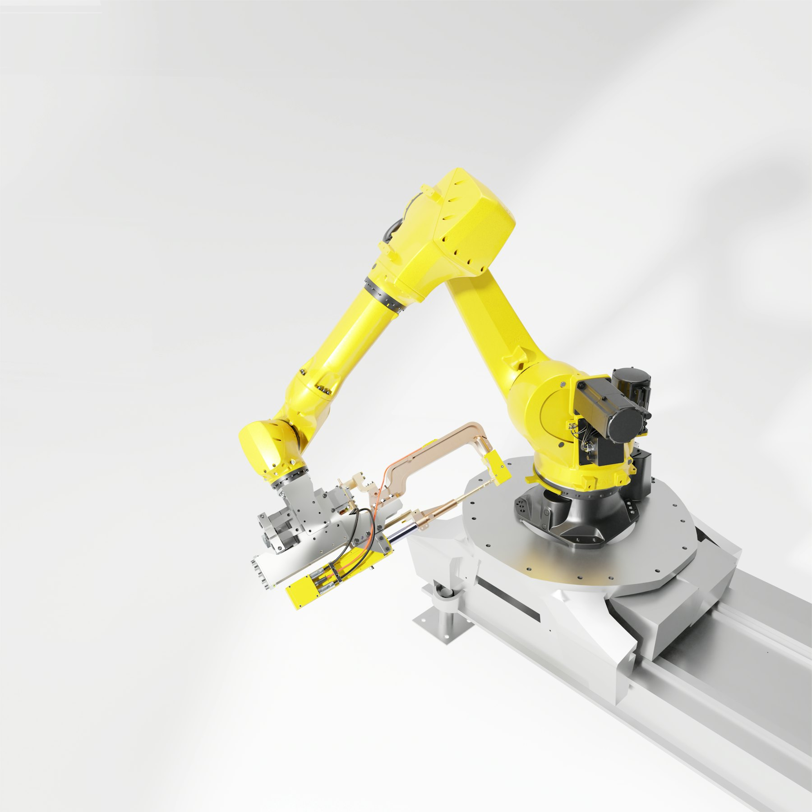
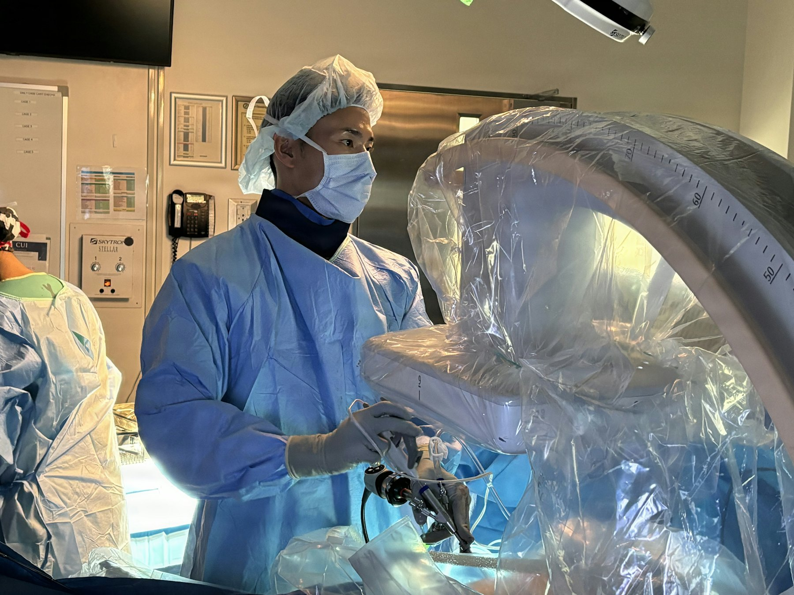
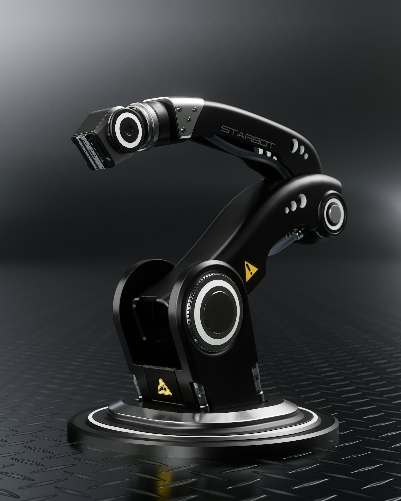

St. Meridian Medical Center
AI intelligence added to an existing surgical robot platform — no hardware changes, no data collection in sterile environments. 12 months across 3 hospitals.
−22%
procedure time
−18%
infection rate
4.6/5
surgeon rating

MachineGPT brings LLM reasoning into the physical world — understanding 3D context, translating natural-language goals into robot action plans, and coordinating multi-agent fleets in real time.
Programming robots has always required deep expertise: writing state machines, specifying motion primitives, debugging low-level joint controllers. That bottleneck means most companies can’t move fast enough to make physical AI economically viable.
Even deployed robots are brittle. A new object type, a different bin configuration, a change in product line — all require engineering intervention.

Illustrative walkthrough of how MachineGPT decomposes, plans and monitors an instruction.
When GPT-4 arrived, our team saw it: use the world-modelling capacity of large language models for the high-level reasoning robotics always struggled with. Not to write code — to plan actions.
The challenge was grounding. We spent 18 months building the spatial-temporal perception layer that gives MachineGPT a body.



A model trained for a 7-DOF arm doesn’t usually transfer to a 6-DOF arm without retraining. MachineGPT 2.0’s morphology encoder changes that.

“We went from needing a robotics engineer to reprogram a task to having a warehouse operator do it in plain English in under 2 minutes.”

HealthcareAI intelligence added to an existing surgical robot platform — no hardware changes, no data collection in sterile environments. 12 months across 3 hospitals.
 Agriculture
AgricultureHarvest robots across 14 crop varieties on terrain that changes every season — run day to day by farm operators through natural-language control.
“MachineGPT understands surgical context in a way I did not think was possible for an AI system. It anticipates what I need before I ask for it. That buys back cognitive bandwidth for the decisions that matter.”
“We deployed harvest robots across 4,000 hectares in under two growing seasons. The natural language control interface means our farm operators — not software engineers — manage the fleet day to day.”


Request API access and we’ll set up a pilot on your robots, your tasks and your environment.